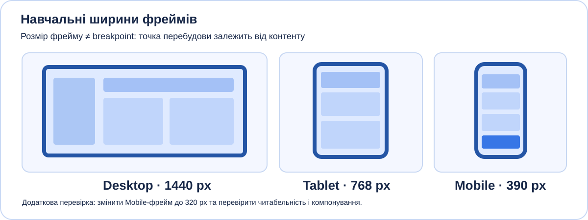
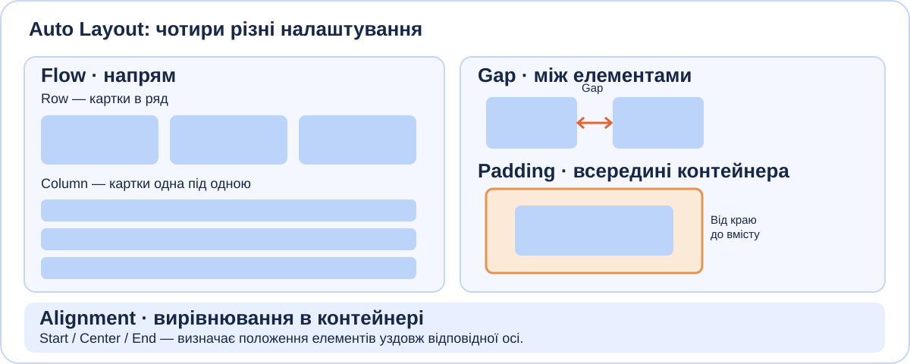
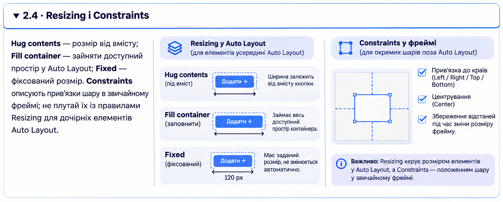
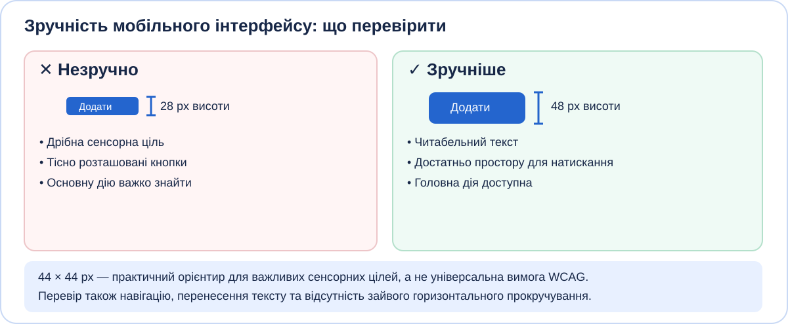

ЛИШЕ ДЛЯ ВЧИТЕЛЯ
Методичні орієнтири
Мета: завершений комплект одного ключового екрана Desktop–Tablet–Mobile. Інші сторінки — за наявності часу або вдома. Оцінюємо макети у Figma, не лише чекліст. ШІ не може перевірити приховані властивості фреймів за скриншотом.
У разі відсутності доступу до ШІ учень виконує самостійний аудит за тими самими критеріями. Сайт не надсилає дані вчителю.
10 ХВ · ПРАКТИЧНА ЛАБОРАТОРІЯ
Відновлення
Імпортуй JSON Пари 02, щоб продовжити власний проєкт. Оригінал файлу не змінюється; Пара 03 створює окремий стан і окремий експорт.
Після імпорту тут з’являться сторінки з Пари 02.
15 ХВ · ПРАКТИЧНА ЛАБОРАТОРІЯ
Теорія
Мета — не зменшити Desktop, а зберегти основні дії й читабельність при зміні ширини екрана.
2.1 · Адаптивний дизайн: не масштабування, а перебудова
На Desktop кілька секцій можуть стояти поруч; на Mobile їх доцільно розмістити послідовно. Потрібно зберегти головну дію, доступ до навігації та зміст. Не приховуй критично важливу функцію лише заради чистого вигляду.
Три стиснуті картки, дрібний текст.
Одна колонка, достатньо місця для тексту.
2.2 · Breakpoints і навчальні ширини
Для цієї вправи використовуємо 1440 px (Desktop), 768 px (Tablet), 390 px (Mobile). Це навчальні розміри фреймів, не універсальні breakpoints. Реальна точка перебудови визначається поведінкою контенту. Додатково перевір Mobile при ширині 320 px.

Спробуй у Figma: У Figma створи фрейми шириною 1440, 768 і 390 px. Для Mobile тимчасово встанови 320 px і перевір компонування.
2.3 · Auto Layout: Flow, Gap, Padding, Alignment
Flow задає напрям розташування, Gap — проміжки між елементами, Padding — відступи всередині контейнера, Alignment — вирівнювання. Вибери три картки, натисни Shift + A, порівняй горизонтальне і вертикальне компонування.

Спробуй у Figma: У Figma створи три картки: перемкни Row/Column, зміни Gap і Padding та спробуй вирівнювання Start, Center і End.
2.4 · Resizing і Constraints
Hug contents — розмір від вмісту; Fill container — зайняти доступний простір у Auto Layout; Fixed — фіксований розмір. Constraints описують прив’язки шарів у звичайному фреймі; не плутай їх із правилами Resizing для дочірніх елементів Auto Layout.

Спробуй у Figma: У Figma порівняй Hug contents, Fill container і Fixed на власних елементах; перевір Constraints у звичайному фреймі.
2.5 · Навігація, читабельність, доступність
Перевір, чи не зникає основна дія, чи немає горизонтального прокручування без потреби, чи текст читається, а кнопки достатньо великі для натискання. Орієнтир для важливих сенсорних кнопок — близько 44 × 44 px; це практична рекомендація, а не формулювання критерію WCAG. Перевірка скриншотів ШІ не доводить відповідність WCAG.
WCAG 2.2 — першоджерело · Figma Auto Layout

Спробуй у Figma: Перевір головну кнопку Mobile-макета, читабельність тексту та доступність навігації; не роби висновків про WCAG лише зі скриншота.
Мініексперимент у Figma
- Створи три картки й виділи їх.
- Натисни Shift + A, спробуй Horizontal та Vertical.
- Зміни ширину контейнера та перевір Gap, Padding, Fill container.
- Запиши, що потрібно змінити для вузького екрана.
20 ХВ · ПРАКТИЧНА ЛАБОРАТОРІЯ
Tablet UI
- Зроби копію Desktop-фрейму, оригінал не змінюй.
- Назви копію
Home / Tablet, установи ширину 768 px. - Переглянь колонки, відступи, навігацію та порядок блоків.
- Налаштуй Auto Layout, Gap, Padding і Resizing.
- Перевір головну дію та читабельність; збережи покликання на конкретний фрейм.
25 ХВ · ПРАКТИЧНА ЛАБОРАТОРІЯ
Mobile UI
- Створи окремий фрейм
Home / Mobileшириною 390 px. - Визнач пріоритет інформації: що має бути першим?
- Перебудуй колонки, адаптуй меню, картки та кнопки.
- Не зменшуй текст до нечитабельного розміру.
- Перевір фрейм також при ширині 320 px: зафіксуй проблеми та виправлення.
- Опиши щонайменше три обґрунтовані зміни.
Desktop-меню просто приховано, переходів до сторінок немає.
Компактна навігація забезпечує доступ до всіх важливих розділів.
10 ХВ · ПРАКТИЧНА ЛАБОРАТОРІЯ
ШІ-аудит
Зроби скриншоти трьох версій. Використай дозволений для навчання ШІ-інструмент. Не передавай персональні дані. Скриншоти не дають ШІ доступу до внутрішньої структури Figma.
Ти — UI/UX-рев’юер. Порівняй три прикріплені макети одного продукту: Desktop, Tablet і Mobile. Назви до п’яти конкретних проблем із читабельністю, навігацією, ієрархією та узгодженістю компонентів. Посилайся лише на видимі елементи. Відокремлюй спостереження від припущень.
Проаналізуй Mobile-макет для сенсорного керування. Чи легко знайти головну дію? Які елементи можуть бути незручними? Запропонуй конкретні виправлення. Якщо розмір неможливо визначити зі скриншота, прямо зазнач це.
Перевір власні рекомендації: яку видиму проблему вирішує кожна, що потрібно перевірити у Figma і коли рекомендація може бути недоречною? Не заявляй про відповідність WCAG без належної перевірки.
10 ХВ · ПРАКТИЧНА ЛАБОРАТОРІЯ
Рефлексія
Заповни журнал рішень. Зафіксуй не лише що змінилося, а й чому.
Журнал рішень
Самооцінка · 0–3 за кожним критерієм
Самооцінка: /12 — учитель перевіряє реальні макети у Figma.
ЕКСПОРТ ТА ВІДНОВЛЕННЯ
Збережи результат
TXT — звіт для Moodle; JSON — повний стан Пари 03 для відновлення на іншому пристрої й наступного заняття. Оригінальний JSON Пари 02 зберігай окремо.
LocalStorage працює лише у цьому браузері на цьому пристрої.